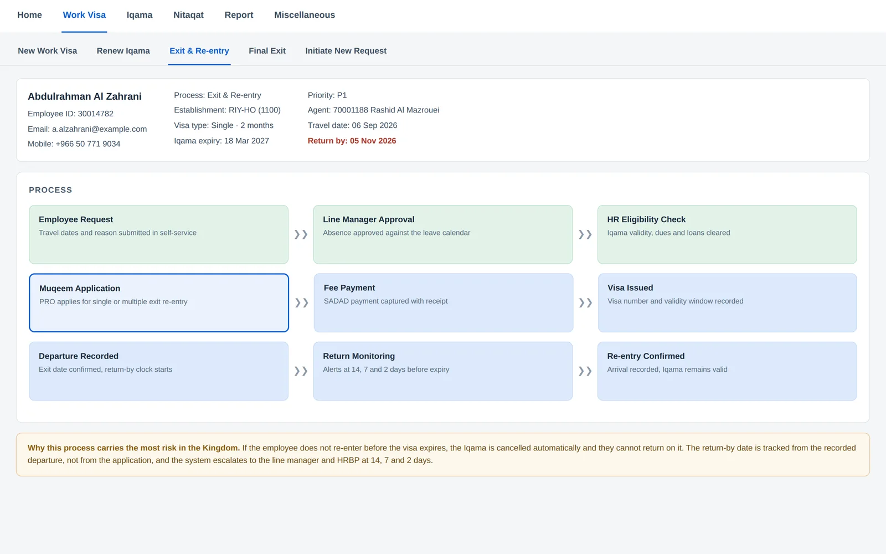
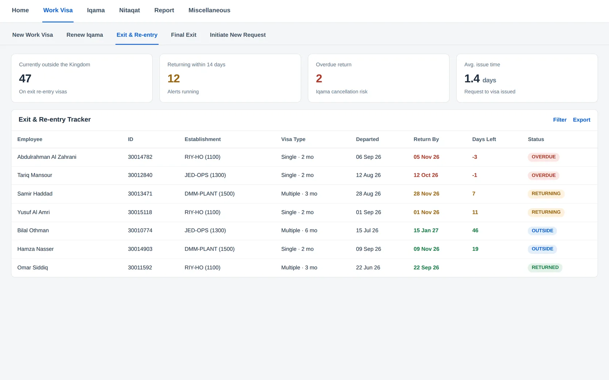
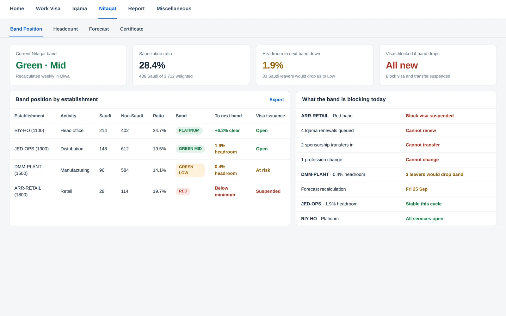
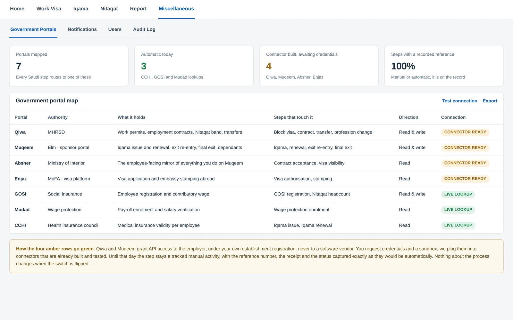
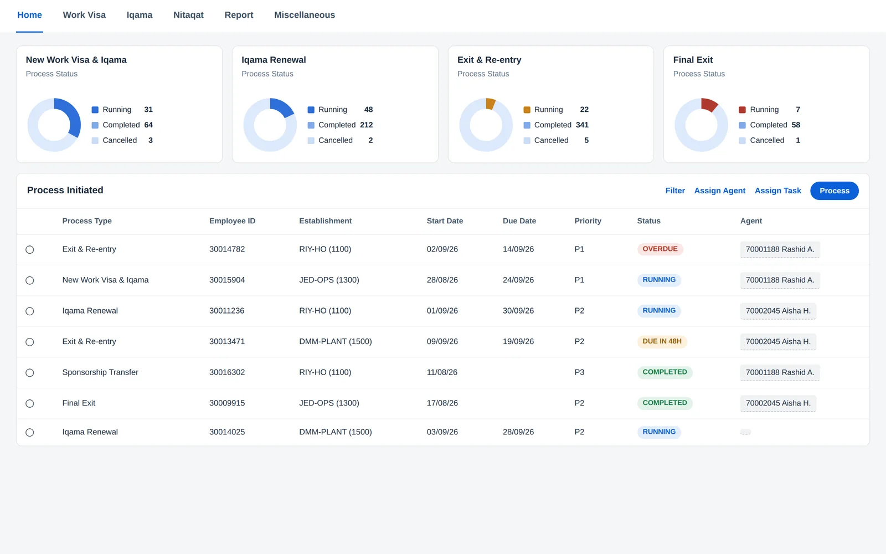
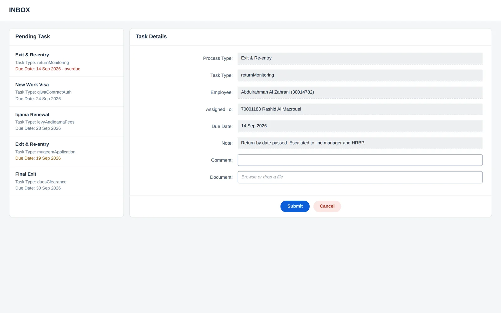
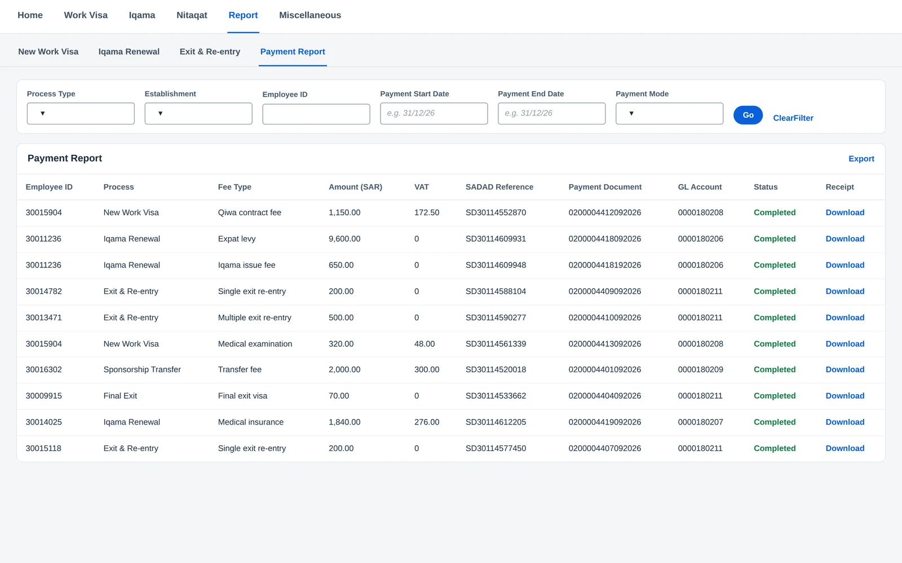

Qiwa holds the job. Muqeem holds the residence. Absher is what your employee sees. None of them talk to each other, and your Nitaqat band quietly decides whether you can hire at all. We put the lot on one track.
Saudi Arabia is the hardest market in the GCC to govern, and it is not because the rules are unclear. It is because the rules live in three different places, each with its own clock, and one of them can switch the others off.
Drop a band and visas, renewals and transfers all stop. Most companies learn this from a rejection in Qiwa, not from their own numbers.
An employee lands and a statutory window opens. Nobody is counting it for you, and the penalty is not a warning letter.
Someone travels, the visa lapses while they are away, the Iqama is cancelled. They cannot come back.
SAR 9,600 a head, every year. Budgeted once, then forgotten, then it lands in a month nobody planned for.
Iqamas bunch around hiring dates. One quarter is quiet, the next carries three hundred renewals and the fees with them.
Your HR system holds the employee. Qiwa and Muqeem hold the truth about whether they can legally work. Nothing keeps the two honest.
Same seven roles as anywhere else, different job. Pick one and see what lands in their inbox once the Kingdom's rules are built into the process.
The whole Saudi lifecycle on one page. Stages run left to right in the order they actually happen. Each lane is a person, and every arrow is a hand-off.
These are the configured process tracks for the Kingdom. Click any step to see who owns it, what has to be captured, which payments are compulsory, and what happens if it goes quiet.
These are the application configured for Saudi Arabia, showing the Qiwa and Muqeem processes, the Iqama lifecycle, exit and re-entry, and Nitaqat. They are representative screens of that configuration rather than captures of a live Saudi tenant. The workflow engine, task model, payment capture and reporting underneath them are the ones running in production in the UAE today. We would rather you knew which is which before a demo than during one.
Ten ways into the Kingdom. Each has its own steps, its own fees and its own trap.
The standard hire
No sponsor at all
Short assignments
Bulk, then out
Already in the Kingdom
Meetings and projects
Engaged, not employed
Spouse and children
Outside the company file
Moves the ratio
A block visa is permission to recruit a number of people, in a profession, of a nationality. Four things decide whether you get one.
Nitaqat decides whether the tap opens at all. Red means nothing is issued, whatever your business case.
Allocation scales with the establishment. A new entity gets a handful. An established one gets far more.
Allocation is per profession code, and some are reserved for Saudis outright. The code must match the qualification.
High-volume nationalities go on temporary hold, often seasonally. An approved visa you cannot use is still a blocked hire.
An allocated block visa is an asset with an expiry on it. Hold too few and hiring stalls. Hold too many unused and you have capital sitting idle while the nationality you need goes on hold. The system shows allocated, assigned and remaining per establishment, so recruitment plans against what you actually have rather than what they hope you have.
It sounds like admin. It is the highest-consequence process you run, because the penalty for missing a date is an employee who cannot come back.
Single exit, up to two months. Multiple is SAR 500 for three.
What an extra month costs if you extend from outside the Kingdom.
Days before expiry that we alert the employee, the manager and the HRBP.
Extensions possible once the visa has already expired.
Iqama valid on the return date. Fines, loans and notice cleared. An Iqama that expires abroad makes the re-entry worthless.
Single or multiple, duration chosen and priced before submission. The SADAD receipt is captured in the step.
Not from the day you applied. Leave three days late and your return-by is three days wrong.
Alerts, then the line manager and HRBP, with every contact attempt logged in case it becomes an absence case.


Nitaqat scores each establishment on its share of Saudi nationals and gives it a band. The band is not a report card. It is a switch.
Headcount, nationality and the weighting rules are already here. You watch the number move instead of reading the result.
“Thirty-three Saudi leavers would drop us.” That sentence changes a resignation conversation.
Model a restructure or a bulk hire, and see what it does to the band before you commit to it.

For a Saudi customer this is usually the moment the conversation changes, because it reframes what the product is:
Every Saudi step lands on one of these. Your PRO should not have to remember which.
The job
The residence
What the employee sees
The visa, stamped abroad
Who counts as Saudi
Does pay match the contract
No cover, no Iqama
Qiwa and Muqeem grant API access to the employer, under your own establishment registration. Never to a vendor. You request credentials, we plug them into connectors that are already built.
Until then the step is manual but tracked, with the reference, receipt and status captured exactly as they would be automatically.

Saudi enforcement is joined up now. Fail one and the others stop working.
Registered and authenticated
The master switch
Pay on time, through the bank
Register from day one
Evidence before you report
No cover, no Iqama
Declare before they find it
Not just fines. Repeated violations suspend work permit issuance, sponsorship transfers and residency renewals. In practice that is a hiring freeze imposed on you, at a time you did not choose.
Which is why every obligation above is a tracked task with an owner, rather than something somebody remembers in the week before an inspection.
Every step becomes a real task with a person, a due date and somewhere to escalate. In the Kingdom that matters more than anywhere, because several of these deadlines are statutory.
Routed to a role, then claimed by a named officer. Priority and due date are set right then, from the statutory deadline rather than a guess.
Anything still open pings the owner again. Iqama expiries go out six weeks ahead; exit re-entry returns at 14, 7 and 2 days.
Past the due date it escalates to the line manager and the HRBP on its own. For an overdue return, that happens while the person is still abroad.
Who had it, when they were reminded, what they uploaded and when they submitted. A Qiwa or GOSI inspection becomes a report.


Saudi Arabia adds something the rest of the Gulf does not: the expat levy. It turns permit costs from petty cash into a line the CFO cares about.
Amount, VAT, SADAD reference and payment date are compulsory on the step itself.
The SADAD receipt has to be uploaded. No file, no submit, and the step stays open.
Expat levy modelled per employee per year, so renewals do not land as an unplanned cost.
Straight to the right GL account with a payment document number, ready to post in S/4HANA.
Filter by establishment, process, fee type or date, then export it for finance.
Every SADAD reference is tied to one step of one case, so the same fee cannot be recorded twice.
Renewal fees and levy are forecast against the renewal calendar, so finance sees the quarter coming.
Contract fees, levy, medical, insurance, exit re-entry and transfer fees each carry their own GL account.

The Iqama gets them into the country. SCFHS decides whether they can treat anyone. That runs on its own clock through Mumaris+, and it is long.
Classification through to registration commonly runs several months. Run it after arrival and you are paying someone who cannot work:
Hospital, clinic and pharmacy licences, civil defence certificates and municipality permits tracked as establishment documents with their own expiry alerts.
The same model handles HCIS and industrial safety permits, vehicle registrations, professional memberships and equipment certificates.
The Iqama and the SCFHS licence renew on different cycles. Both sit on the same employee record so neither is missed.
The whole landscape on one picture. SuccessFactors stays your system of record for people. We handle the permit work. Finance gets the money. The Saudi platforms sit on the right, and today that connection is a person, not an API.
Candidates who accepted an offer, the employee master, separations, and the Iqama expiry dates that start a renewal. Through SAP Integration Suite, so it is monitored and retried like any other SAP integration.
Iqama number, expiry, profession as registered in Qiwa, and work permit status, straight into Employee Central. Nobody re-types anything.
Every payment with its amount, VAT, SADAD reference, receipt and GL account, posted to S/4HANA as a journal. Levy accruals included.
A native SAP Business Technology Platform application. Here is what to provision in your global account. The core services are needed for any deployment; the rest you add for integration and scale.
| SAP BTP service | What it does here | Need |
|---|---|---|
| Cloud Foundry Runtime | Hosts the application, workflow engine and APIs | Core |
| SAP HANA Cloud | Iqama records, Nitaqat headcount, payments, audit trail | Core |
| SAP Build Work Zone | Role-based portal for PRO, HR, finance and employees | Core |
| SAP Build Process Automation | Steps, routing, statutory due dates, reminders and escalation | Core |
| SAP Identity Authentication | Single sign-on and directory federation | Core |
| Destination & Connectivity | Secure outbound to SuccessFactors, S/4HANA and future Saudi endpoints | Core |
| SAP Integration Suite (CPI) | Flows to SF Recruiting, Onboarding, Employee Central and S/4HANA Finance | Integration |
| Document Management Service | Passports, Qiwa contracts, SADAD receipts, SCFHS certificates | Recommended |
| Alert Notification / Email | Iqama expiry alerts, return-by alerts, escalation mail | Recommended |
| Job Scheduling Service | Nightly expiry and return-by scans, Nitaqat recalculation | Recommended |
| SAP Analytics Cloud | Nitaqat forecasting, levy budgeting, executive dashboards | Optional |
| Business Application Studio | Localisation and change-request development | Optional |
Deployable in an SAP BTP region that meets Saudi data residency expectations, which is usually the first question a Saudi CIO asks and worth answering early.
The interface ships in English. Arabic and right-to-left layout are a defined localisation package rather than a rebuild.
If your SF modules are not live yet, the non-integrated version still gives full governance, task management and Nitaqat tracking from day one.
A working desk for the people carrying your Saudi compliance risk.
Everything you have just seen is the KSA pack. The engine underneath runs six more markets, so your second country is a configuration, not another project.
Qiwa · Muqeem · Absher · GOSI · Mudad
Nitaqat gates everything. Exit and re-entry is the trap.
MOHRE · ICP · GDRFA · Tasheel
Golden Visa splits the residence from the work permit. Two clocks.
ADLSA · MOI · Qatar Visa Centre
Most of the work happens before the employee ever travels.
PAM · MOI · PACI
Permit and residency sit with two authorities on two clocks.
Ministry of Labour · ROP
Omanisation gates clearance, the same way Nitaqat does here.
LMRA · NPRA · GOSI
One authority runs the whole permit. The cleanest API candidate in the region.
Ministry of Labour · PNA
Rotating crews. Proof matters more than volume.
The GCC journey walks every country pack, all 36 permit types, and the authorities behind each one.
Open the GCC journeyWorkflow, tasks, payment capture and reporting are identical everywhere. What changes per country is the steps, the authorities and the thresholds.
A PRO who learns the Saudi screens already knows the Emirati ones. Same queue, same inbox, same escalation ladder.
Adding a country does not add a platform, a contract or a separate support model. It adds a pack.
Qiwa, Muqeem and Absher in step. Nitaqat calculated before it bites. Exit and re-entry tracked to the day. The same application that runs the rest of the GCC, configured for Saudi rules.